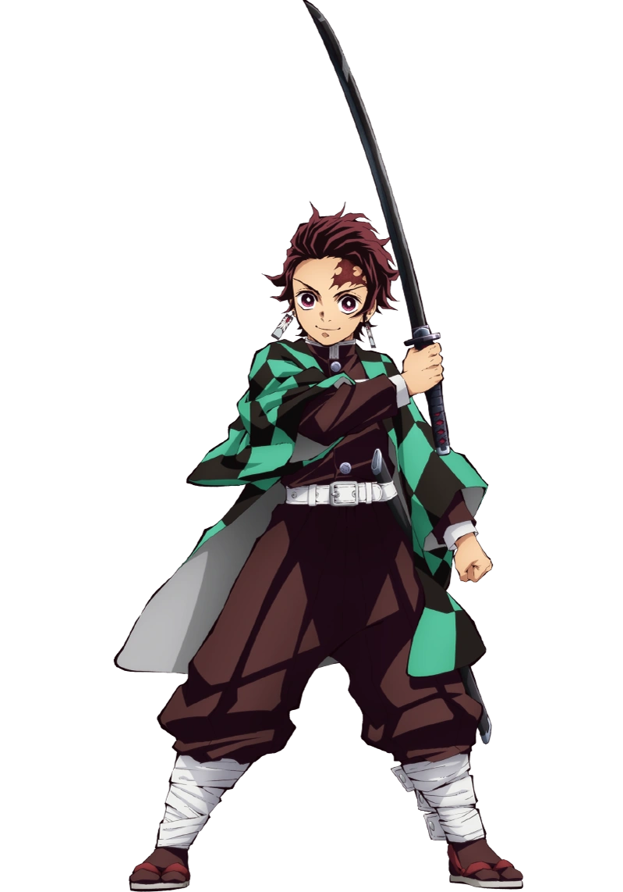
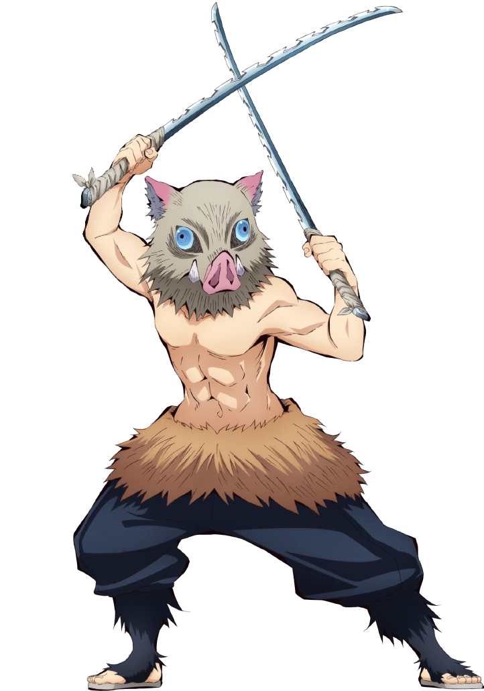
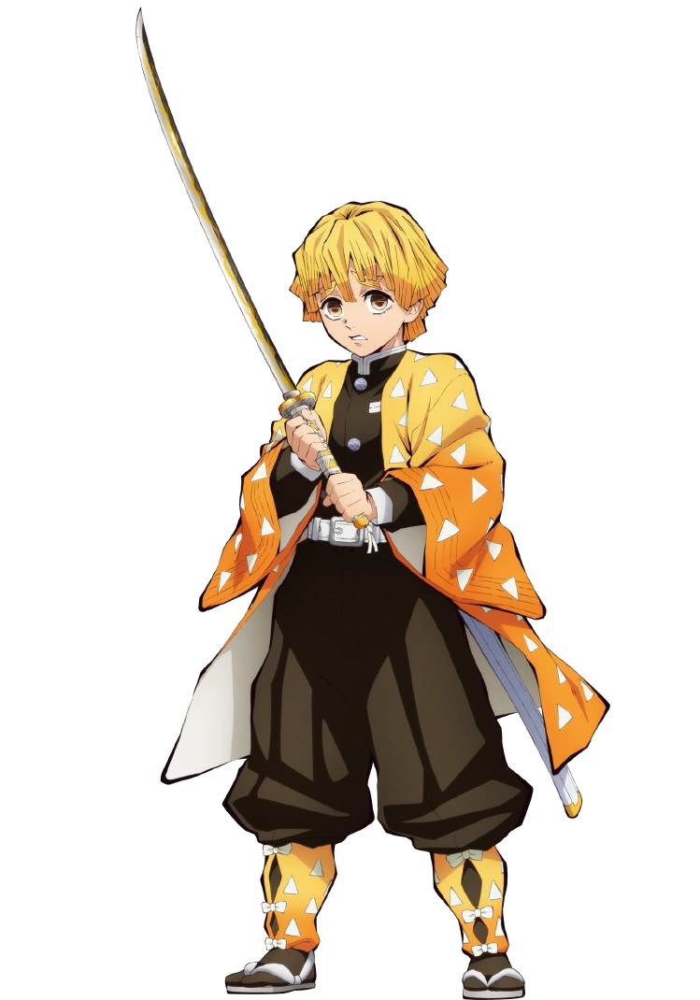

| NOMBRE | IMAGEN | AÑO | OBSERVACIONES |
|---|---|---|---|
| Tanjiro Kamado |  |
2011 |
Es el protagonista principal de Kimetsu no Yaiba. Es un cazador de Demonios cuyo principal objetivo
es encontrar al responsable de haber matado a su familia y convertido a su hermana Nezuko en una Demonio
y luego juró derrotar a Muzan Kibutsuji, el Rey de los Demonios, para evitar que otros sufran el mismo
destino que él.
|
| Inosuke Hashibira |  |
2009 |
Es uno de los personajes principales de la franquicia Kimetsu no Yaiba. Fue un Cazador de Demonios
perteneciente al Cuerpo de Exterminio de Demonios, creador y único usuario conocido de la
Respiración de la Bestia.
|
| Zenitsu Agatsuma |  |
2008 |
Por naturaleza, Zenitsu es cobarde. Siempre afirma que no tiene mucho tiempo de vida
debido al peligroso trabajo de ser un Cazador de demonios. También es un poco mujeriego y le gusta
flirtear con las chicas que él piensa que son lindas y les pide que se casen con él para su molestia.
|